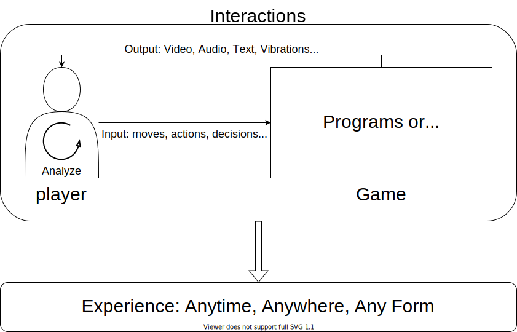
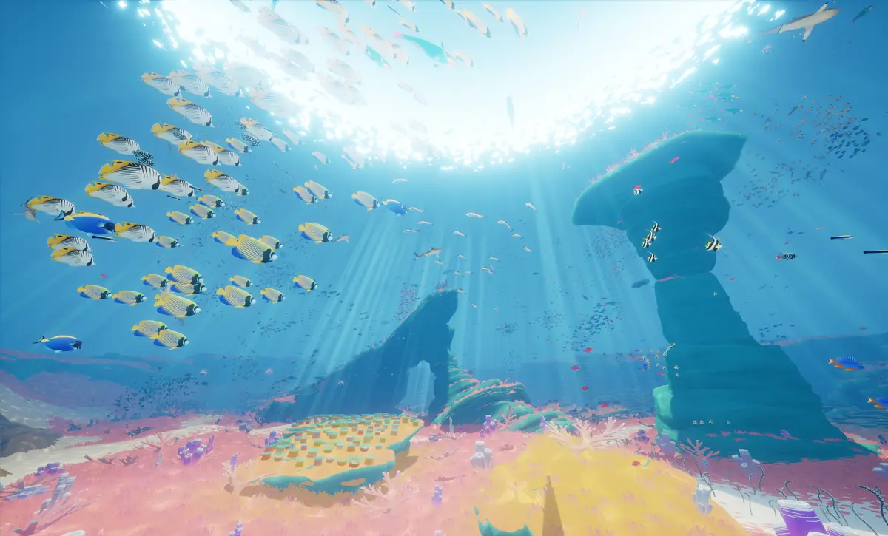
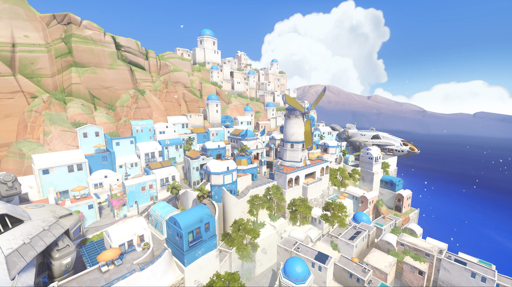
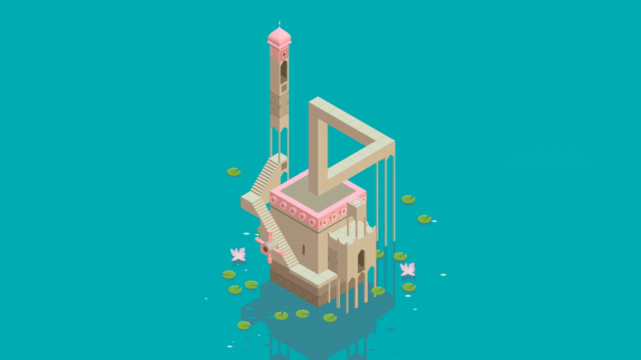
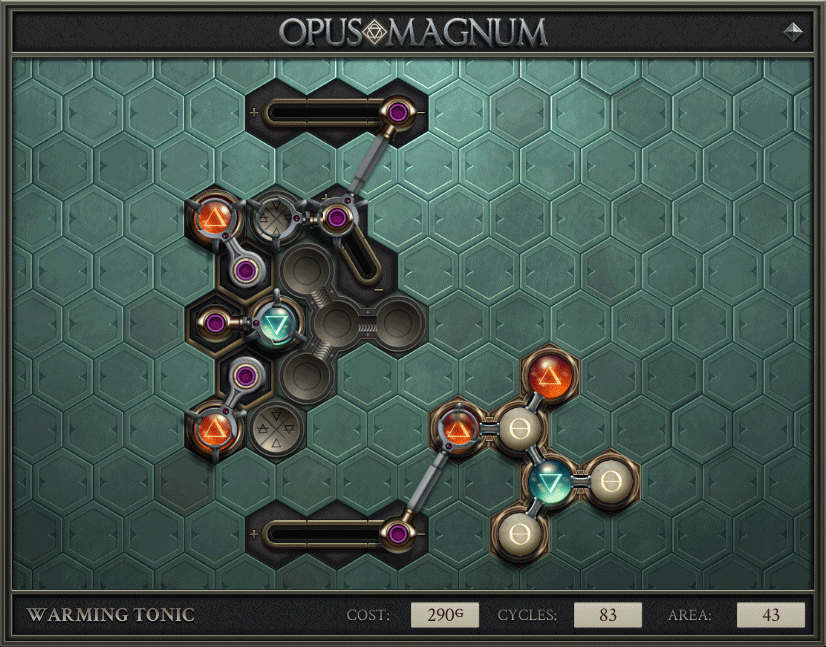
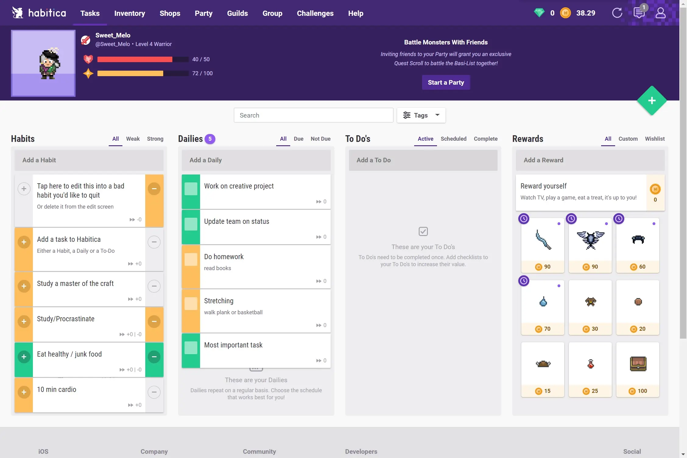

电子游戏的价值
游戏能带来什么
许多前人曾经说过的，“电子游戏是一种艺术，互动的艺术”。
文明系列的主创席德梅尔曾说过：
Game is a series of interesting decisions. – Sid Miere, GDC 1989
站在三十多年后的今天来看，电子游戏作为一种以视频为载体的内容，它与同以视频为载体的电影最大的区别就是玩家可以通过选择来影响游戏的发展。玩家的选择和因为选择而产生的影响，就是互动性的一种具体表现。
如果说电影可以带来临场感和角色的认同感，打个形象的比喻就是，你站在球场上看球，某个球员的身影让你回想起自己20岁的样子；那么游戏则是可以真正让你代入这个角色，因为游戏的输入使屏幕里角色的行为被你控制，输出使游戏里事件的走向被你影响，也就是说你从观众变成了球员。而这些互动性其实都是服务于游戏的核心——体验，换句话说让你真切感受到自己确实在踢球。
我曾经分析过COD4是如何通过互动性的关卡设计来给玩家带来紧张真实的体验。这里我再举另一个例子——Steep。作为一款雪地极限运动游戏，他让玩家足不出户便能体验到在阿尔卑斯的山脊上纵横驰骋的心旷神怡与惊险刺激；另一方面，他也让极限运动这个勇敢者的游戏飞入寻常百姓家，即使是胆小鬼也能有机会一窥极限运动的乐趣。
我们总说游戏是给玩家带来体验的，以上两个例子便是很好的总结：给玩家带来无视时间空间（甚至财富与阶级、现实与虚幻），仿佛亲身参与过的一种体验。这也是为什么游戏或许能降低犯罪率，能让陷入低谷的你重拾信心，当你进入游戏，你就已经与现实中的自己决裂。

游戏在娱乐以外的意义
一款优秀的游戏可以让玩家在体验这个虚拟世界的同时，感受不同的情感、获得美的熏陶、甚至收获知识。这使得游戏实际上已经不再是一种简单的娱乐形式（虽然游戏的娱乐属性依然是设计中的主要目标），它一方面可以引发思考，就像其他任何艺术形式一样"You See, You Experience, You Think"；另一方面还可以承载教育的作用，这在学术界一般被称为"Learning through play"。另外从游戏设计的角度来看，为了保持玩家对游戏的兴趣，游戏组织短、中、长期目标并给予相应奖励反馈的方式是有自己的优越性的。如果将这种设计运用到生活中，也不失为一种帮助用户树立目标并实现正反馈循环的方法，这种游戏化设计在学术界被称为"Gamification"。以下我将上述这三个方面展开。
You See, You Experience, You Think
就像任何艺术作品都会有一个主题，优秀的游戏大多也是以一个主题为核心展开的。玩家顺着围绕主题展开的关卡设计、故事情节和美术氛围逆流而上时难免会因为其中一些内容而产生共鸣。有时候这种共鸣是与主题相关的，有时候确实却是独立于主题的全新的理解。这些共鸣其实就是玩家将游戏内容与自身经历或游玩感受结合在一起思考而产生的一些想法。
COD: World at War可能是最早引发我对战争残酷性思考的作品。它从太平洋战场的贝里琉岛和东线战场的斯大林格勒两个方向展开，用美军和苏军两个视角对二战进行描绘。当血肉鲜活的战友在你眼前被日军割喉，当你不知道明天与不幸哪个先来临，当复仇的怒火冲破理智让你肆意屠杀战俘成为一个没有人性的战争机器……整个剧情的推动方式已经足以展现出战争的残酷。如果你还能发现万岁冲锋的日军都是戴着眼镜的学生兵，坚守柏林的德军大都打着绷带或头发花白……这些细节可能会让你对“战争没有赢家”有更加深刻的理解。我相信游戏开发者们确实是希望玩家透过这样一个真实而残酷的战争故事去思考战争背后的东西，而这可能也是它能在一众二战游戏中脱颖而出的一个原因。
有趣的是游戏的自由度在某种程度上会阻碍你与游戏设计者之间的共鸣，比如说游戏的难度。小学时第一次玩COD5的时候因为选择的难度较简单，其实以上感受并不强烈，就像任何其它FPS游戏一样重复着”突突突——找个掩体休息——突突突“的循环；然而当长大后在最高难度下再次通关时，随时可能被斜侧里杀出的敌人刺穿的恐惧和漫天的手榴弹雨带来的慌乱，让我更深刻地理解了战争的残酷。事实上，难度之于一款游戏就像色彩之于一幅画，你想体验到作者希望给你带来的感受就必须顺着作者制定的规则去体验，自适应地改变这些元素都会导致感受的偏差。有兴趣的可以去看看《黑暗之魂》应该有个简单模式吗？。
Learning Through play
游戏的教育作用其实也有两种不同深度的实现方式：一种是给普通的游戏附加教育的价值，通过游戏带给玩家的体验将艺术或知识以附带产物的形式传达给玩家，其实许多商业游戏出于种种目的都在做这件事；另一种则是完全以特定目设计的游戏，我们一般称为"Serious game".
在玩中学
以Abzu为例，这样一款氛围体验游戏其实就是将潜水——从阳光明媚的浅海到幽暗神秘的深海——的体验带给玩家。抛开它优秀的节奏和延续自风之旅人的无台词叙事不谈，这款游戏最大的亮点就是将水下生态以艺术却又不乏准确性的方式展现出来，同时拜占庭风格的水下遗迹和埃及（玛雅？）风格的壁画也很有特点。
作为一款解谜冒险游戏，很多从玩法出发的玩家会认为它的游戏性不佳，流程缺乏新意；但如果以更广泛的玩家为标准，它色彩夸张的画面和丰富也各有特点的海洋生物（还会对玩家的行为作出反应）带给我的震撼让我一口气通关后依然意犹未尽，我认为它能激发玩家对海洋的探索欲，同时让玩家在游戏中自发地去了解海洋生物的一些基本信息，这样看无疑是非常有价值的。而steam名列前茅的销量和90%的好评率似乎也说明大家确实在游戏中有所收获和感悟。

其实还有许多像Abzu这样以娱乐为主要目标的游戏，都在美术、音乐和关卡设计中埋下了艺术和科学的种子。即使他们的初衷可能是为了美观的场景、有趣的玩法或其它非教育意义的原因，这些设计也在潜移默化地影响玩家的审美和认知；而一旦玩家的兴趣被激发，就极有可能借此契机对这些设计背后的艺术或科学知识进行更深入的探索。
-
比较基本的例子如很多堪称旅游模拟器的游戏，它们很好地体现了故事背景地区建筑的特点

守望先锋中伊利奥斯的一张地图将希腊圣托里尼岛标志性的蓝白相间建筑展现给玩家 -
更进一步的比如纪念碑谷，它通过关卡设计不动声色地传达出埃舍尔作品的思想

纪念碑谷中许多设计的灵感都来自于埃舍尔的错视艺术作品 -
最极端的可能就是微软模拟飞行这种拟真模拟游戏，如果玩家想完全体验游戏的全部内容，就得学习相应的知识
完全没有相关知识的玩家看到这样拟真的操作界面，内心可能更多的是茫然
在学中玩
不同于前面提到的游戏，serious games从目标到游戏内每一关的设计都是以某个具体的目标为导向的。这个目标可以是学习知识（Edugame）、艺术创作（Art game）甚至引导玩家健身（Exergame），是的你没看错，健身环大冒险其实属于SG的范畴。这三者里面我认为Art game跟另外两者差异比较大，它其实是利用游戏的互动性来实现单纯在文字、图像、或视频中无法实现的一些艺术创意。而另外两类则是将关卡与相应的目标对应起来进行设计，让玩家通过游戏的流程达成目标，以此增强学习或健身的趣味性。
其实我们玩游戏的过程就是一个不断学习然后验证的过程，只不过对大部分游戏而言，学习和验证的对象是游戏设计者设计的各种机制。如果游戏内的机制都与现实生活中的知识对应起来，那么这样设计出来的游戏能够学习知识并对学习成果验证也就是顺理成章的事情了。
另一方面，实验和多媒体材料作为两种有助于理解知识的方式已经被广泛认可，而serious games则类似于两者的结合。特别是对于一些难以通过实验来观察微观层面的变化的事件——比如化学反应中电子的迁移，serious game可以通过构建这些事件并模拟学生的输入对事件的影响来达到与实验类似的效果。
这也是为什么越来越多的博物馆和科技馆等科教场所会把互动游戏作为展览的一部分——多媒体与动手实验的形式共同让参观者对相关展品有更直观的认识。
但是这类游戏有三个难点：
- 新知识（机制）的密度
- 验证过程（关卡）的难度
- 如何将抽象的概念具象化
前面两点会影响到学习的效率与游戏的乐趣，如何平衡这两者让玩家有可观学习效率的同时又不至于失去兴趣会是设计者需要首要考虑的问题。不过就如其它游戏的设计方法一样，serious game的这两点也是与心理学中的心流理论相关的，可以参考陈星汉老师的Flow in Games。
第三点则是决定了游戏的适用范围和关卡的实现方式。以数学为例，一方面数形结合能非常直观的展现相关概念和规律，但另一方面许多高阶的知识难以用图像展示也是不争的事实。这种时候在思考如何用其他形式的关卡展现的同时，更需要思考相关知识通过游戏展示是否是有必要的，毕竟目的是让学习更直观、有趣，而非为了把他们做成游戏。
我认为，化学是非常适合以游戏的形式呈现的。一方面，它以元素特性和相关反应为核心的呈现方式使得整个知识体系的单元特征非常强烈，每个单元中相对有限的知识点有助于解决前两点问题；另一方面，各种反应实际上是对过程的描述，因而较为容易设计成具象的关卡来学习；最后，反应中的一些微观过程（比如电子的迁移）是很难通过实验中的宏观表现来观察到的，用游戏模拟对应过程会更加直观。

Gamification
为了保持玩家对游戏的兴趣，游戏会帮助玩家设立目标、对玩家的行为提供反馈、让玩家始终处于舒适区中。将以此为目的的机制运用在非游戏的场景中的设计就被称为Gamification。
以RPG为例，它们通常会有一些主线任务为玩家制定长期且持续的目标，同时主线任务也被分解为若干小任务给予玩家短期目标，还有一些支线任务用于引导玩家对一些不那么重要的事件进行探索；同时他也会有等级系统给予玩家成长的体验，击杀怪物和完成任务掉落的道具也是对玩家行为的反馈。这样一套复杂且完整的系统让玩家在不同的阶段能有对应的目标而不至于迷失；同时奖励产生的正反馈会让玩家渴望去接着完成下一个目标。更极端的例子就是很多游戏里的每日任务，它将目标-奖励的正反馈循环运用到极致，使玩家有一种惯性去周而复始地完成任务。
现在已经有许多公司和机构将这种设计运用到日常管理中，而github上也有一个开源项目Habitica以相同的理念吸引到了无数用户。

- 游戏内的三种任务——习惯、每日任务和待办事项——其实就是在引导玩家自主地设计短中长期目标。这些任务有些完成时会获得金币奖励，没完成时并无影响；而有些则完全没有奖励，但是没完成会扣除生命值。
- 最右侧的奖励——既有游戏内的虚拟道具，玩家也可以自己设定现实生活中的奖励——则是引导玩家通过做任务等活动获取金币奖励后对自己进行奖励以形成正反馈的循环。
- 游戏还有工会、组队打怪等形式的社交，当然所谓的战斗部分其实是通过小队成员在一定时间内完成任务的程度来决定的。这其实是引入了游戏内的社交概念，希望通过小团体和小组监督的方式来鼓励所有成员完成设定的目标。
总体来看，Habitica确实能够帮助使用者设定目标，并提醒他们对自己的hard-working进行反馈；同时也通过多种方式鼓励和引导玩家去完成任务。但是透过它我也发现了Gamification的一些问题：游玩游戏时人最根本的动力还是游戏的趣味性，所有对目标的引导和行为的反馈只是一种辅助。这使得Habitica其实还是有些流于形式，毕竟足够自律的人其实每时每刻内心都有一个TODO-list，他们并不需要这些工具来帮助自己规划目标；而那些真正缺乏动力的人，即使使用Habitica规划好了目标，设定好了完成时的奖励，他也会因为对需要做的事情缺乏兴趣而不太愿意去完成。
因此，Gamification有没有用、好不好用可能会很大程度上受限于个体的差异。
一些碎碎念
如何用游戏激发玩家的想象（比如架空世界的游戏），又或是引发他们对自己生活的世界的兴趣，有意愿去走出家门探索这个世界（比如以现实为架构的游戏），这可能是每个在设计之初就希望游戏不止于娱乐的设计者应该仔细思考的问题。
游戏终究只是一个载体，它只负责传达出游戏制作者的审美和思想，因此游戏制作者的积累和想法会直接影响游戏作品的表现。这也是为什么我会在职业规划里留下继续学习深造的可能性，当我在设计上遇到瓶颈的时候，我想从社会、心理、行为等各个方面更系统地研究游戏、理解游戏。很幸运的一点是，专门研究游戏的一些专业已经建立起来了，北美御三家USC IMGD, CMU ETC, NYU MFA以及祖师爷MIT CMS可能是这个世界上能让你最为系统地学习游戏设计和背后的原理的地方。
很多人觉得游戏就是生而为娱乐的。回到最开头的例子，电影最终被人们接纳为一种艺术形式经历了数十年，可能游戏也需要同样长的时间，一代又一代人的努力，才能让其摆脱这种刻板印象。
毕竟说到底，就像爆米花电影和文艺片，为他们赋予不同意义的是人的思想。
相关阅读
-
Gamifying education: what is known, what is believed and what remains uncertain: a critical review: https://rdcu.be/coEvf
-
陈星汉老师的硕士论文研究 —— realizing dynamic Flow experiences for different individuals: http://www.jenovachen.com/flowingames/
-
Games and Play at the Museum: https://www.sfmoma.org/read/games-and-play-museum/
-
A History of Museum Games at the Science Museum: https://vimeo.com/307970387